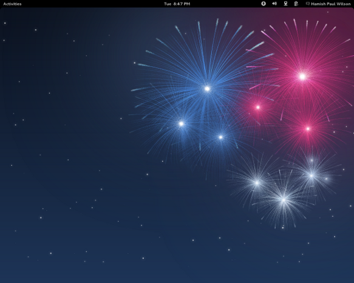

Netbooks in a tablet world¶
The Guardian is ringing the death knell on the netbook. I would tell the story a little differently, so I will.

In the beginning was the $100 laptop dream¶
Before 2005, there were not many small factor laptops. I had the smallest Thinkpad, which was merely a smaller version of any other Thinkpad, which had a high end processor and lots of RAM, and it cost quite a bit back then. $1000-2000 dollars was the typical price for a laptop, and due to economies of scale, the then standard 15 inch screen laptop was always the cheapest model, smaller and larger sizes were a bit more expensive.
In 2005, the OLPC (One Laptop Per Child) X1 was announced - a $100 laptop aimed at children, with a special low power processor from AMD, running a version of Fedora Linux, with suitable proportions for a children. The X1 included a video camera, touch screen, sd card slot and wifi; features that were considered high end in 2005.
The dominant computer companies had a collective nervous breakdown at the mere concept of it. While everyone appreciated the new and noble idea of OLPC, the existing market leaders were extremely hostile to it. Microsoft lobbied departments of education around the world, telling them that if they bought their children non-Microsoft devices then their future careers would be ruined forever, etc, etc.
Meanwhile Intel did something a little more positive in that it dusted off its shoes and worked with hardware manufacturers to get Intel powered devices to the market. The first was ASUS with its educational “Classmate PC”, and the consumer oriented counterpart the Eee PC.
Until this point, the trend of processor manufacturing was towards increasingly more powerful (and hungrier) processors. Intel didn’t even have a suitably efficient chip so it under clocked its lowest laptop processor from 900 MHz to 630 MHz. Later it would get its act together with its Atom chip, but a little late as ARM based chips had already gotten most of the market.
Nobody cared about the Classmate PC, but despite the stupid name, the Eee PC was a big hit. Despite the bizarre 1980s style border around the screen, the early 701 series models were great, they had solid state drives and cost around £200. They were also light enough to use while holding them up, unlike the bulky laptops a lot of people still had back then.
It might not sound it like it now, but in 2007 it seemed really cool that with a netbook, you did not bother with a specialised multi-pocket laptop bag, it was not a chore to throw it into your backpack and keep it with you at all times. If the worst came to the worst and it was lost or stolen, £200 is rather less of a shock than £1000-2000.
Meanwhile, the OLPC project has had some solid achievements, and 2.5 million kids using the XO laptops, but the initial excitement and the wide coalition of support faded out, and it has not yet managed to overcome the political and monopolistic obstacles to a global roll out. It also never got into the required production volumes to be exactly $100 per unit. If you are a department of education, especially a developing world country, $100 per child is already a lot, a $200 dollar laptop for each child proved to be out of the question. [They always seem to have enough money for military jets and nuclear programmes though!].
This is is a shame because the Sugar interface is a fantastic learning tool for children. Maybe its time is still to come. They are trying to pull everyone back together for the launch of the new iteration, the XO-4, sometime this year.
Netbooks and dodgy Linux pre-installs¶
A lot of other manufacturers brought out ‘netbooks’, we were given an Acer Aspire One by a relative, and some of them, including the Eee PC, came with Linux. What I have never understood about netbooks, is that they always came with an unknown and slightly crap form of Linux, with almost no decent applications on them.
In the wider desktop and laptop markets, Linux users tend to install Linux distributions as an after-market upgrade, sidelining or wiping out completely the redundant copy of Windows install that came pre-installed with the computer. It is an extremely competitive market; at the time of writing this article, the DistroWatch website lists 314 currently available Linux distributions.
A lot of these are hobbyist or specialist efforts, but out of this whirlwind come a handful of really big ones, that the majority of Linux users actually have installed. Ignoring distributions aimed at technically proficient users such as Gentoo, Arch, and Slackware, the big ones include Ubuntu, Fedora, SuSE, Debian, Mandriva and Mint.

These are all free, so why didn’t the netbook manufactures install these? They have a proven track record of usability and popularity and existing teams working on improving them. If Ubuntu alone has 20 million users already, then why not sell what these people want? The highly innovative world of Linux, with things constantly forking and splitting, probably does not make it easy for manufacturers, but the big brands like Fedora and Ubuntu are pretty stable participants. Fedora’s backer Redhat had its famous IPO in 1999 and is a S&P 500 company.
I have no idea why laptop manufacturers and the big Linux distributions have not done a better job at working together. Of course, there is obviously a massive obstacle in the entrenched Windows monopoly and the marketing budget that Windows gets from its monopoly profits.
Small companies who pre-install Linux on computers as a boutique service for time-poor Linux users are not readily assisted by the manufacturers of the laptops. Dell had a half-effort at selling Ubuntu laptops, but not in the UK, maybe that will increase. Canonical now seems to be having some new efforts on working with manufacturers with regard to tablets so we will see how that pans out.
In the mean time, what people commonly call “Real Linux” distributions have been completely overtaken by the rise of Android, as we will come to shortly.
2007-2010 - The short reign of the netbook¶
Despite some promising signs, the netbook boom ended pretty quickly. I agree with the Guardian article on that to a certain extent.
As the Guardian points out, the first major blow was specification creep. The computer hardware industry’s habits would not die easily, and they soon watered down the concept. Instead of a small fast portable computer with a web browser, simple fast applications, no moving parts, and costing £200, they soon reverted to type: to make Windows and its accompanying bloatware perform decently required better hardware, regular hard drives replaced solid state storage, whirring fans came back, battery run times collapsed, and they soon crept back up to £300-400.
Going further than the Guardian article, I would add here that the second and more important blow was a lack of software innovation. Microsoft worked hard to make sure Windows got the lion’s share of pre-installs, but it did not attempt to do anything innovative in the netbook space. It provided either the dated Windows XP (launched in 2001), or a crippled version of its later systems. It did not attempt to create software relevant to a low powered portable device. So the majority of netbooks were sold with software not particularly designed for it.
The third and fatal blow was the launch of the iPad in 2010, and then the arrival of even better Android tablets. A lot of computer users are passive information consumers, and short form and asynchronous interactions of the social networking boom are not inhibited by the lack of a physical keyboard. Unlike netbooks, tablets managed to free themselves from the Windows baggage and have specially tailed operating systems.
Tablets and phones fatally bisect the netbook market; occasional and light users can just use tablets and phones, professionals can afford the $1000 small factor laptops, ‘Ultrabooks™’ as Intel calls them.
However, I think the fact that netbooks were sold with unsuitable Windows operating systems was the biggest factor. I think with the right tailored software, netbooks can be useful tools.
The rise of Android and Chrome¶
While the “Real Linux” distributions were mostly ignored by the manufacturers. In an act of genius that we almost have come to expect from Google as a matter of routine, it got the concept of commodity computing and used it as a way to increase usage of its own services. Android and Chrome are technically Linux, but all the common applications are replaced by Google’s own offerings, and whatever crap the manufacturer adds on.
Long time Linux users were initially not impressed they could not easily use their existing applications and the fact that it launched with a Java only development environment alienated a lot of C and Python developers on the Linux platform who felt lobotomised by it. Over the last five years, the Linux community has mostly come to terms with Android.

Android is the most successful distribution in the history of open source software. Don’t get me wrong, I like it a lot, I have Android devices and I love them in their own way, but it is not want I really want for my primary computing device. This would take another whole article to explain but Android is Linux but with all the joie de vivre, the joy and enthusiasm, sucked out of it. Also, I still it is relatively early days in open source software, the big game changing Linux device has not been invented yet.

Here is where I have to really depart from the Guardian article, they claim that no netbooks are being released. Well I think that must be a pretty narrow definition of a netbook.
Chromebooks, netbooks with Google stuff preinstalled rather than Microsoft’s, are the second incarnation of netbooks. Because Chromebooks use a special BIOS and bootloader, it is currently a bit of a faff installing your own Linux distribution, but it is possible and hopefully it will get easier over time if the distros find some easier way of installing on Chromebooks.
So from the perspective of a Linux user, despite the initial faff, Ubuntu on an Acer Chromebook is little different than running Ubuntu on an Acer Aspire. For me Chromebooks are still netbooks.
Netbooks will not die¶
For me the netbook format is still relevant and will not die (yet at least).
Tablets are like small babies, you have to hold them all the time, I haven’t mastered the art of propping the iPad up. Even bespoke stands are never around the moment you want to put the tablet down. Giving a presentation from a tablet or a phone not only requires being very organised - it is hard to make last minute changes from a tablet, it is also quite expensive to get a VGA connector for them (and you have to not lose it).
I know it is not trendy, but sometimes you just want to use physical keys. I do have a very nice bluetooth keyboard for my Android powered Samsung S3, but Emacs does not work very well on it, it is not ported very well and Android’s own features try to take over. Although I will hopefully get over some of these problems over time.
At the moment I am very lucky to have a high end laptop due to the nature of my job. However in general, I am a desktop type of guy. I like buying the components and screwing them together. I like being able to stick more RAM in later when it becomes cheaper. I like being able to scavenge for spare parts and turning three broken machines into two working ones. I like two full sized monitors.

I hate it when expensive laptops break, in general these are not fixable at home and have to be sent away, which can be as expensive as a netbook, but is also inconvenient being without it for several weeks.
For me a netbook is a very nice complement to the desktop/home media server type setup. It works enough offline, and with a good connection I can use the full power of my home desktop remotely. If it breaks it is less of a problem, being £200 to replace.
Chromebooks¶
Lets have a look at some Chromebooks.

The cheapest current Chromebook seems to be the Acer C7 Chromebook which at $200 and £200 is a pretty unfair currency conversion, it certainly one to buy while in the US, or perhaps have posted from a US seller if you are not in a hurry. I like the fact it has VGA (for projectors) and HDMI (for TVs) and still has an ethernet port (for plugging into a wired network) which is rare this days. It is not lacking in power with an over-generous 2GB of RAM. It has a massive 320GB old fashioned hard drive, which you will either love (lots of storage and less fear of disk corruption) or hate (it is a moving part which can make noise and potentially fail). I personally would prefer a small solid state drive.
If you get through the Chromebook bootloader hassle and successfully get Linux installed, since it has an Intel processor and graphics, it should work pretty well. Intel graphics is a plus since Intel stuff normally works automatically without the need for a proprietary driver (but then I am not a gamer, Linux gamer types always seem to get Nvidia graphics). It does not say what the wifi chip is, if it is Intel too then all the better.

More expensive, but at least with a sane UK price, at $325 or £230 is the Samsung Chromebook. It also has 2GB of RAM but it is slim and fanless with a 16GB solid state drive and bluetooth.
So in many ways it is a better machine than the Acer but it is ARM, which is the trendy thing but there is no support for hardware accelerated graphics at the moment for Linux on this ARM chip and some proprietary software might not work either if it does not have an ARM binary, if you rely on Skype or Flash or something, you might want to check if these work on ARM. However, Michael Larabel of Phoronix has reported good things about it.
Both seem nice but neither are the perfect netbook.
Less is more¶
Fundamentally, I think these are still too high expensive and in that sense, netbooks have not really begun yet.
Of course when compiling software or doing video editing or whatever, one still wants the best computer possible. However, If I was designing a netbook, I would accept that in 2013, you are likely to have many computing devices - phones, tablets, smart TVs, desktops and games consoles and so on. I would explicitly make it good at being a cheap portable laptop you sling in your backpack.
The ‘Zethbook’ would be a small factor laptop with modest (32GB or 64GB) solid state drive and preferably no fans or other moving parts, with no more than 1.0 GHz processor, and no more than 1GB of RAM, preferably with Intel graphics or some other Linux supported chipset.
The Zethbook could then be incrementally improved in other ways that do not involve unnecessary bloating up the cost and power usage, as battery technology improves but the processor stays the same, why not 100 hours of usage? Why not 1000 hours? Make it sandproof for the beach, make it waterproof so you spill a whole glass of soda over it or use it in the shower. Make the keyboard better, improve the screen resolution, make it more user modifiable. Improve the shock resistance so it can cope with being accidentally dropped open with the screen hitting the floor first, let it be bike proof and fall off the handlebars at 20 mph and hit the road without damage. Let it fall out of a car window at 60 mph.

It is great that computers get more powerful every year, but I think it is a bit too one-sided. The international Space Station runs on the 386 processor which was brought out in 1985. The Linux kernel and GNU GCC compiler are now starting to remove support for it now, but the 386 is still (in theory) usable with Linux for a while longer. Going forward in time, with an efficient choice of operating system, 95% of things can be done on a Pentium 4 computer from 2000. It is just lazy programming that requires bloated systems all the time.

Sadly you won’t see the Zethbook any time soon. Boards aside, the OpenPandora (warning: linked web page has sound) is the nicest complete Linux device I have seen so far, it is a handheld game console costing over $500. It is not that easy to get the price down without being made by the biggest manufacturers like Asus, Acer or Samsung etc.

The Raspberry Pi Model B is perfectly usable at 512 MB and 700 Mhz (twice as powerful as the original version of the OLPC XO). The Raspberry Pi Model B is $35. Granted it does not have a keyboard (cheap) or a screen (expensive) or wifi, but we can still imagine a portable device for $100, which of course, is the OLPC dream that started the netbook story. I am quite interested in those who are putting the Raspberry Pi in home made mobile forms and may follow that up in a future post.
Let me know your thoughts on netbooks. Do you love or hate the netbook. Will you miss its passing if it does die out? Do you like or hate the idea of Chromebooks?